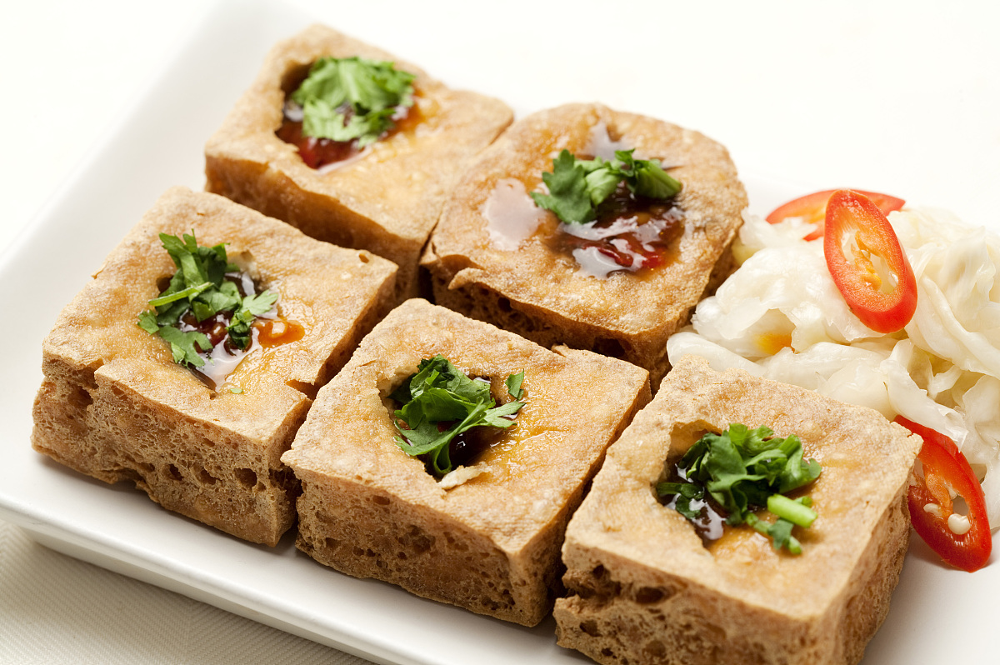

<!DOCTYPE html>
<html lang="en">
<head>
    <meta charset="UTF-8">
    <meta name="viewport" content="width=device-width, initial-scale=1.0">
    <title>Document</title>
    <style type="text/css">
        body {
            background-color: rgb(255, 230, 162);
            }
        h1{
            text-align: center;
        }
        h2{
            background-color: rgb(255, 198, 133);padding: 20px;
         }
         img{
             width: 100%;
             height: 100%;
         }
    </style>
</head>
<body background="25.jpg"> 
</body>
<body>
<h1>臭豆腐————我最喜爱的美食</h1>
    <h2>简介:臭豆腐(Stinky tofu)，中国传统特色小吃，在各地的制作方式、食用方法均有相当大的差异，有北方和南方的不同类型，臭豆腐在南方又称臭干子。其名虽俗气、却外陋内秀、平中见奇、源远流长，是一种极具特色的中华传统小吃，古老而传统，令人欲罢不能。制作材料有大豆、豆豉、纯碱等。<p></p>
        在中国以及世界各地的制作方式和食用方式均存在地区上的差异，其味道也差异甚大，但具有"闻起来臭、吃起来香"的特点。长沙和南京的臭豆腐相当闻名，台湾、浙江、上海、北京、武汉、玉林等地的臭豆腐也颇有名气。

天津街头多为南京臭豆腐，为灰白豆腐块油炸成金黄色，臭味很淡。南方街头的臭豆腐多以"长沙臭豆腐"为招牌，同样是油炸，但是内部中空且为黑色，臭味更为突出。<p></p>
        <p></p>
        超链接：<a href="https://baike.so.com/doc/5411204-5649303.html">臭豆腐详细介绍</a>
    </h2>
         学号：201916180127 姓名：符明超<p></p>
         简介：来自通信1901班，待人礼貌温和<p></p>
         前一位同学：201916180126 陈善聪<p></p>
         后一位同学：201916180128 周子清 
         </body>
</html>
